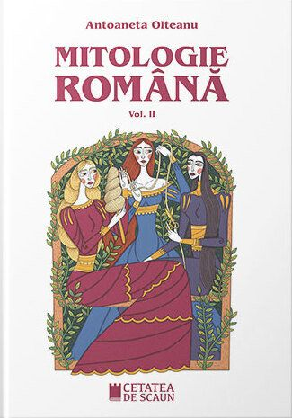

Mitologia romana
Antoaneta Olteanu
Un volum-bijuterie despre mitologia greco-romana si cea nordica.
Volumul I Laicizate, degradate, camuflate, miturile si imaginile mitice se intalnesc pretutindeni: nu ai decat sa le recunosti. Mircea Eliade Mitologia, inteleasa intr-o maniera atat de extensiva, se prezinta ca o metoda de analiza a culturilor diverselor societati. In cazul in care cauta sa descrie culturile comunitatilor fara scriere, asa-zise arhaice, ea poate fi considerata ca unul dintre domeniile etnologiei. Daca se intereseaza de descrierea vechilor culturi istorice si, in acelasi timp, de reconstituirea lor, mitologia devine una dintre componentele esentiale ale istoriei culturii.